Chapitre I : Isomérie - fonctions oxygénées et Amine
I - Les fonctions oxygénées
1. Les alcools
Un alcool est un composé organique dont l'un des carbones (celui-ci étant tétragonal) est lié à un groupement hydroxyle (-OH).
+ Formule générale:

+ Formule brute: CnH2n+2O
+ Nomenclature:
Le nom d'un alcool est obtenu à partir de celui de l'alcane correspondant en remplaçant le suffixe -e de l'alcane par le suffixe -ol .
Exemple:
methanol CH3-OH
éthanol CH3-CH2-OH
Si la structure de l'alcool devient plus compliquée, il faut indiquer le numéro de l'atome de carbone où le groupe hydroxyle est fixé.
Exemples:
propan-2-ol: CH3-CHOH-CH3
3,3 dimethylbutan-2-ol: CH3-C(CH3)2-CHOH-CH3
2. Les acides carboxyliques:
Le terme acide carboxylique désigne une molécule comprenant un groupement carboxyle :
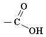
Ce groupe est composé d'un atome de carbone, lié par une double liaison à un atome d'oxygène et lié par une liaison simple à un groupe hydroxyle.
+ Formule générale :
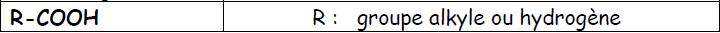
+ Formule brute: CnH2nO2
+ Nomenclature
- Systématique: Le nom de l'acide est obtenu à partir de celui de l'alcane correspondant en remplaçant le suffixe -e de l'alcane par le suffixe « -oïque », et en le faisant précéder de "acide".
- Usuelle : comme de nombreux composés organiques, les acides carboxyliques ont des noms usuels fréquemment utilisés dans la littérature et rappelant la source depuis laquelle ils furent d'abord isolés.
Exemples:
HCOOH acide méthanoïque (ou formique)
CH3-COOH acide éthanoïque (ou acétique)
CH3-CH2COOH acide propanoïque
CH3-(CH2)2–COOH acide butanoïque (ou butyrique)
CH3-(CH2)3–COOH acide pentanoïque (ou valérique)
3. Les aldéhydes
Un aldéhyde est un composé organique, faisant partie de la famille des composés carbonylés, dont l'un des atomes de carbone primaire (relié au plus à 1 atome de carbone) de la chaîne carbonée porte un groupement carbonyle : C=O
+ Formule générale:
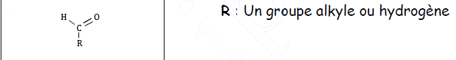
Groupement fonctionnel : H-C=O (carbone trigonal plan)
Formule brute : CnH2nO Nomenclature :
Le nom de l'aldéhyde est obtenu à partir de celui de l'alcane correspondant en remplaçant le suffixe -e de l'alcane par le suffixe "al". (Jamais de numéro, car le groupement fonctionnel est toujours en bout de chaîne).
Exemples:
HCHO méthanal
CH3-CHO éthanal
CH3-CH2-CHO propanal
CH3-CH(CH3)-CH(CH3)-CH2-CHO 3,4-diméthylpentanal
4. Les cétones
Une cétone est un composé organique, faisant partie de la famille des composés carbonylés, dont l'un des carbones porte un groupement carbonyle.
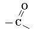
- Formule générale :
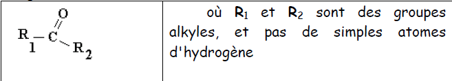
- Formule brute: CnH2nO
- Nomenclature
Le nom de la cétone s'obtient en remplaçant le suffixe -e de l'alcane correspondant par le suffixe -one, en précisant la place de la liaison carbonyle dans la chaîne carbonée.
Exemples:
(propanone ) CH3-CO-CH3
(2-mthylhex-3-one ) CH3-CH2-CH2-CO-CH(CH3)-CH3
5. Ether-oxydes
Les éther-oxydes, appelés aussi plus simplement éthers, sont des substances chimiques, de la forme R-O-R', où R et R' sont deux groupes alkyles.
- Formule brute: CnH2n+2O
- Nomenclature : En ce qui concerne les éthers non cycliques : par rapport à l'oxygène central, la chaîne alkyle la plus longue est utilisée en suffixe et l'autre chaîne en préfixe de type alcoxy.
Exemples :
1-méthoxypropane (CH3-O-C3H7)
éthoxyéthane (C2H5-O-C2H5).
5. Ester
La fonction ester désigne un groupement d'atomes formé d'un atome de carbone lié simultanément à un atome d'oxygène par double liaison, à un groupement O-R et à un groupement H ou R'. -Formule générale :
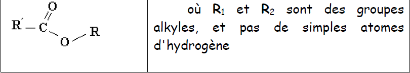
Formule brute: CnH2nO2
- Nomenclature :
Le nom d'un ester comporte deux termes :
1. le premier, qui se termine en -oate, désigne la chaîne principale qui provient de l'acide carboxylique. Elle est liée au carbone et est numérotée quand c'est nécessaire à partir de celui-ci.
2. le second, qui se termine en -yle, est le nom du groupe alkyle provenant de l'alcool. Cette chaîne est numérotée à partir de l'atome de carbone lié à l'atome d'oxygène de la fonction ester.
Exemples:
méthanoate d'éthyle (H-COO-CH2-CH3)
éthanoate d'éthyle (CH3-COO-CH2-CH3)
II - Les Amines
1. Définition :
On appelle amines les composés obtenus à partir de la molécule d’ammoniac NH3, par substitution d’un, de deux ou de trois groupes alkyles à un, deux ou trois atomes d’hydrogène.
Formule générale : CnH2n+3N
2. Classes d’amine :
a. Amine primaire :
Une amine est dite primaire si l’atome d’azote est lié au plus à un seul atome de carbone (R-NH2).
Nomenclature : Les amines primaires sont nommées de façon analogue aux alcools, en remplaçant Ol par le préfixe amine. Le numéro de l’atome de carbone qui porte le groupe – NH2 est indiqué entre tirets avant le suffixe amine.
Exemples :
1) CH3-NH2 Méthylamine ou méthanamine
2) CH3-CH2-NH2 Ethylamine ou ethanamine
3) CH3-CH2-CH2–NH2 Propan–1–amine
b. Amine secondaire :
Une amine est dite secondaire si l’atome d’azote est lié à deux atomes de carbone (R-NH-R’).
Nomenclature : La chaîne la plus longue contenant le groupe –NH donne la racine du nom (alkanamine) qui est précédé du nom du substituant et de l’indice N suivi d’un tiret qui est placé en tête.
Exemples :
1) CH3–NH-CH3 Diméthylamine ou N- méthylméthanamine
2) CH3–NH2-CH2–CH3 N, méthyléthanamine
c. Amine tertiaire :
Une amine est dite tertiaire si l’atome d’azote est lié à trois atomes de carbone (R-N(R’)-R’’).
Nomenclature : Lorsque qu’une amine tertiaire a deux substituant identiques, son nom est obtenue en faisant précéder le nom de l’amine du nom d’un substituant, précédé du préfixe N,N- di et suivi d’un tiret. Si les substituants sont différents, son nom est obtenu en faisant précéder le nom de l’amine du nom des substituants, précédé de l’indice N- cités dans l’ordre alphabétique, séparés par un espace, le dernier étant suivi d’un tiret.
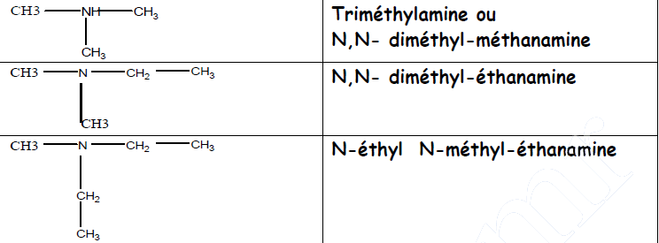
III - Isomérie
En chimie organique, on parle d'isomérie lorsque deux molécules possèdent la même formule brute mais ont des formules semi - développées ou des formules développées différentes. Ces molécules, appelées isomères, ont des propriétés physiques, chimiques et biologiques différentes.
Le terme isomérie vient du grec ίσος (isos = identique) et μερος (meros = partie).
On distingue différentes isoméries, principalement l'isomérie de constitution et la stéréo-isomérie (isomérie de configuration et isomérie de conformation).
1. L'isomérie de constitution
L'isomérie de constitution correspond aux isoméries désignant des enchaînements d'atomes différents. Des isomères de constitution ont pour seul point commun leur formule brute.
a. L'isomérie de chaîne(ou de squelette)
L'isomérie de chaîne désigne les isomères qui diffèrent par leur chaîne carbonée (squelette). Ces isomères sont caractérisés par leurs propriétés chimiques identiques et propriétés physiques différentes.
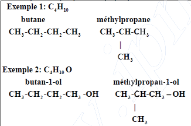
b. L'isomérie de position
Les isomères de position sont des isomères de constitution qui ont la même chaîne carbonée, mais différent par l'implantation, le long de cette chaîne, dans même groupe fonctionnel. Ces isomères sont caractérisés par leurs propriétés physiques différentes et chimiques légèrement différentes. On appelle ces isomères, des isomères de "position".
Exemple : C3H7OH
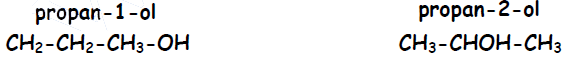
c. L'isomérie de fonction
Les isomères de fonction sont des isomères de constitution qui diffèrent par la nature du groupe fonctionnel présent dans leur molécule.
Exemple : C2H6O
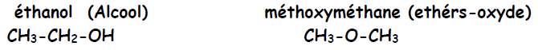
2. La stéréo-isomérie Deux corps sont stéréo-isomères lorsqu'ils ont la même formule plane, mais des structures spatiales différentes. On distingue:
- Les stéréo-isomères de conformation
- Les stéréo-isomères de configuration ( diastérioisomères – énantiomères)
a. Stéréo- isomérie de conformation : On appelle conformation d'une molécule, les différentes structures spatiales qu'elle peut prendre par suite de rotations autour de ses liaisons simples. Deux molécules identiques dans des conformations différentes sont appelées stéréo-isomères de conformation.
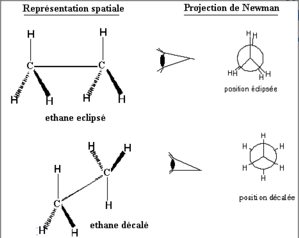
b. Stéréo- isomérie de configuration : Si la disposition spatiale des atomes est fixe, un isomère ne peut pas se transformer spontanément en un autre. On peut isoler les isomères. On distingue :
b-1 L'énantiomère :
Des énantiomères sont des molécules isomères images l'une de l'autre dans un miroir, mais non superposables. Une molécule ayant deux énantiomères est dite chirale. La chiralité est due à la présence d'un atome de carbone asymétrique. Un atome de carbone asymétrique, est un atome de carbone tétraédrique portant quatre atomes ou quatre groupes d'atomes tous différents .On le repère habituellement avec un astérisque C*. La chiralité désigne la propriété d’un objet de ne pas être superposable à son image dans un miroir.
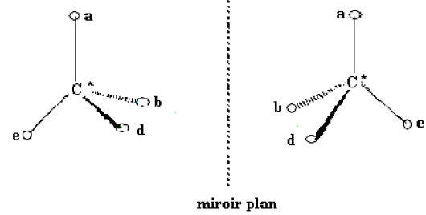
Exemple: CH3-C*H(OH)-COOH acide lactique
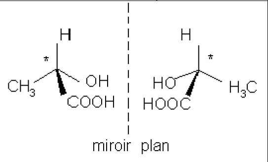
b-2 Diastéréoisomèrie de configurations Z et E :
Lorsque, sur chacun des deux côtés d'une double liaison, on trouve deux groupes différents, on distingue deux configurations : Z et E. La libre rotation autour de la double liaison n'est pas possible, du fait de la présence d'une liaison π : il en résulte une molécule plane ayant deux configurations possibles.
- La configuration Z caractérise les diastéréoisomères dont les atomes d'hydrogénes sont du même côté du plan formé par la double liaison (et perpendiculaire au plan de la molécule). L'abréviation Z vient de l'allemand zusammen qui signifie « ensemble ».
- La configuration E caractérise les diastéréoisomères dont les atomes d'hydrogènes sont du côté opposé l'un de l'autre par le plan formé par la double liaison. Le terme E vient de l'allemand entgegen qui signifie « opposé ».
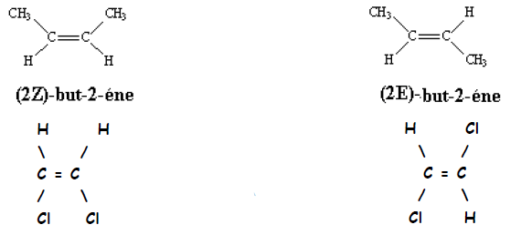
(Z) 1,2 dichloroéthyléne
(E) 1,2 dichloroéthyléne
Remarque: Cette nomenclature Z et E des deux configurations d'un alcène de type RCH=CHR' remplace l'ancienne dénomination cis et trans qui fut respectivement attribuée à chacun de ces isomères